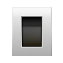

Inspect
Security scanners, then an AI review of business logic, feasibility and legal risks. Every finding cites a real file and line.
Noulette sits next to your coding agent. It checks the repository your agent has open, explains problems in plain words, and fixes only what you approve.
Security scanners, then an AI review of business logic, feasibility and legal risks. Every finding cites a real file and line.
Type BUILD and your agent fixes the approved items. Noulette re-runs the scanners and your tests to confirm each fix.
Reads PostHog or Google Analytics every 5 to 120 minutes and warns you early. Works with OpenAI-compatible, Anthropic, Gemini and Azure AI.
Watches your Downloads and project folders. Suspicious files go to quarantine, and you decide what happens next.
Run the installer, open Noulette, then press Connect next to your coding agent in Settings.
Open any repository in your agent and paste the Inspect prompt. Noulette follows the folder your agent has open, and asks which one when several are open.
Review the plan in Approvals, then type BUILD. With auto-approve on, fixes land on a separate branch and are never merged for you.

OpenCodeThe installer is not code-signed yet. If Windows SmartScreen appears, choose More info, then Run anyway. All releases are on GitHub Releases.